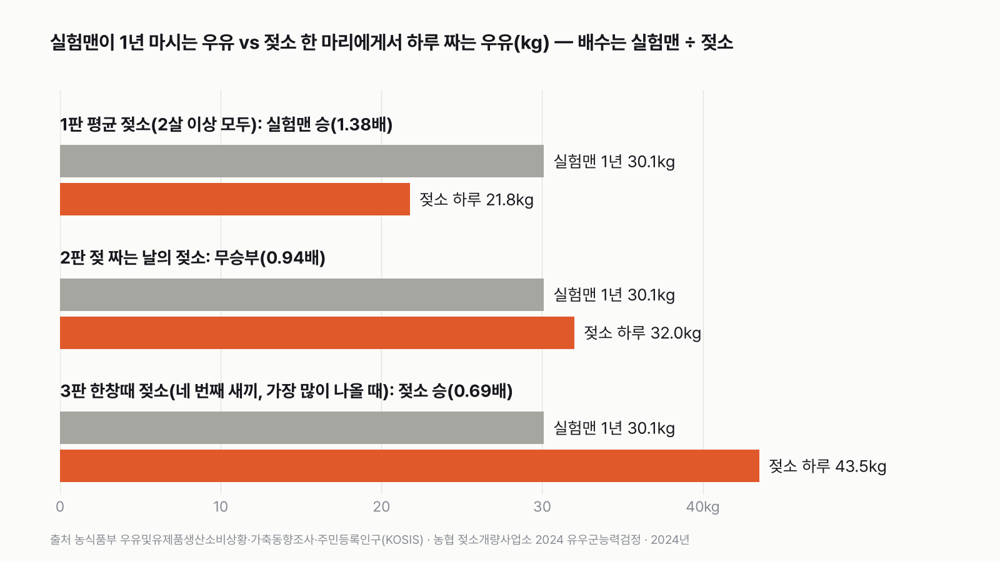
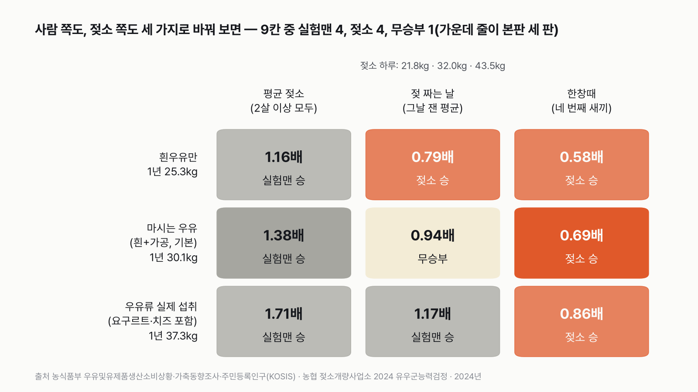
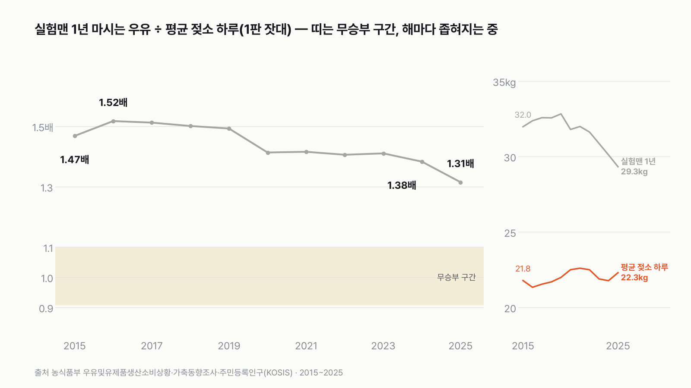

평균 한국인이 1년 동안 마시는 우유, 젖소 한 마리는 하루면 짤 수 있을까
우유 한 팩은 200mL예요. 평균으로는 하루 한 팩이 안 돼요. 그럼 젖소 한 마리에게서는 하루에 몇 kg이나 짤까요? 먼저 골라 주세요.
독자 투표
- 평균 한국인 '실험맨'이 1년 동안 마시는 우유를 모두 모아, 젖소 한 마리에게서 하루에 짜는 우유와 무게로 견줘요.
- 실험맨은 하루 82g, 200mL 팩 반도 안 마셔요. 1년을 모으면 약 30kg이에요.
- 젖소는 평균 소, 젖 짜는 날의 소, 한창때 소가 차례로 나서요.
조건과 규칙
- 실험맨은 평균 한국인이에요. 나라 전체가 1년 동안 마신 우유(흰우유와 바나나·딸기 같은 가공우유)를 인구로 나눈 양이에요.
- 젖소는 한국에서 젖을 짜는 홀스타인이에요. 세 판마다 다른 소가 나서요. 다 큰 소 모두의 평균, 젖을 짜는 날의 소, 네 번째 새끼를 낳은 소가 젖이 가장 많이 나오는 때예요.
- 둘 다 같은 해(2024년) 값이고, 무게(kg)로 견줘요.
- 실험맨 1년 양이 젖소 하루 양의 1.1배 이상이면 '하루로는 모자란다', 젖소 하루 양이 실험맨 1년 양의 1.1배 이상이면 '하루면 짠다'예요. 그 사이는 비긴 거예요.
결과 요약
3판 실험맨 1승 1무 1패 → 최종 무승부
- 실험맨은 1년 동안 우유를 30.1kg 마셔요. 다 큰 젖소 모두를 평균하면 하루 21.8kg이라, 하루로는 모자라요(1.38배).
- 젖을 짜는 날의 젖소에게서는 하루 32kg을 짜요. 통은 채우지만 넘치는 양이 1.9kg, 200mL 팩 9개뿐이라 규칙대로 비겨요(0.94배).
- 네 번째 새끼를 낳은 소가 젖이 가장 많이 나올 때는 하루 43.5kg이라, 하루면 실험맨 1년치를 넘겨요(0.69배).
그래서? 젖 짜는 날의 젖소 한 마리가 하루에 내는 우유가 평균 한국인 한 사람의 1년치와 거의 같아요. 다만 판정은 2판 젖소를 재는 방법에 걸려 있어요. 젖 짜는 날 하루(32kg)로 재면 비기고, 열 달 하루 평균(33.5kg)으로 재면 젖소가 이겨요. 그러면 최종 승자도 젖소로 바뀌어요.
독자 예상 vs 데이터 결과
평균 한국인이 1년 동안 마시는 우유, 젖소 한 마리는 하루면 짤 수 있을까?
데이터 결과: 무승부. 실험맨 1년 30.1kg, 젖 짜는 날의 젖소 하루 32kg이에요. 통은 채우지만 넘치는 양이 200mL 팩 9개뿐이라 비긴 걸로 쳐요. 평균 젖소는 모자라고 한창때 젖소는 넘겨서 1승 1무 1패, 무승부예요.


숫자 두 개로 줄이면 이래요. 실험맨은 하루에 우유를 82g 마셔요. 200mL 팩으로 치면 이틀에 한 팩이 안 돼요. 젖 짜는 날의 젖소에게서는 하루에 32kg, 200mL 팩 155개를 채울 만큼 짜요.
| 판 | 실험맨 1년 | 젖소 하루 | 배수(실험맨 ÷ 젖소) | 승자 |
|---|---|---|---|---|
| 1판 평균 젖소(2살 이상 모두) | 30.1kg | 21.8kg | 1.38배 | 실험맨(하루로는 모자란다) |
| 2판 젖 짜는 날의 젖소 | 30.1kg | 32.0kg | 0.94배 | 무승부 |
| 3판 한창때 젖소(네 번째 새끼, 가장 많이 나올 때) | 30.1kg | 43.5kg | 0.69배 | 젖소(하루면 짠다) |
| 최종 | 3판 1승 1무 1패 → 무승부 |
판마다 실험맨 1년 양을 젖소 하루 양으로 나눴어요. 1.1배 이상이면 실험맨, 0.91배 이하면 젖소, 그 사이는 무승부예요. 실험맨은 세 판 모두 같은 30.1kg이고, 젖소만 바뀌어요. 이 규칙과 가정이면 결과는 무승부예요.
1판 평균 젖소: 실험맨 승(1.38배)
2024년 한국 목장에서 검사를 통과해 팔린 원유는 194만 톤이에요. 같은 해 2살 이상 젖소는 평균 24만 4천 마리였어요. 원유를 이 젖소 수로 나누고 366일(2024년은 윤년)로 나누면 한 마리에게서 하루 21.8kg이에요. 실험맨 1년치 30.1kg에 8.3kg 모자라요. 이 평균에는 새끼를 낳기 전이라 아직 젖이 안 나오는 소와, 다음 출산을 앞두고 젖 짜기를 쉬는 소도 들어 있어요. 송아지에게 먹인 젖과 검사에서 떨어진 젖도 빠졌어요. 그래서 1판 젖소는 실제로 내는 양보다 적게 잡혔어요.
2판 젖 짜는 날의 젖소: 무승부(0.94배)
농협 젖소개량사업소는 해마다 참여한 농가 소들의 젖 양을 직접 재는 날을 정해 재요. 2024년 그날 잰 젖소 한 마리의 하루 평균은 32kg이었어요. 실험맨 1년치 30.1kg을 붓고도 1.9kg이 남으니, 통은 채워요. 하지만 넘치는 양이 200mL 팩 9개뿐이에요. 실험맨 1년치의 6% 남짓이라 1.1배 규칙 안에 들어와, 비긴 걸로 쳐요. 저는 사람 1년과 소 하루가 이렇게 비슷할 줄 몰랐어요. 이 대결에서 가장 놀라운 숫자예요.
3판 한창때 젖소: 젖소 승(0.69배)
젖소는 새끼를 낳아야 젖이 나오고, 새끼를 여러 번 낳을수록 젖이 늘어요. 젖 양을 재는 날 기록을 낳은 횟수별로 보면, 네 번째 새끼를 낳은 소가 젖이 가장 많이 나올 때 하루 43.5kg으로 가장 높았어요. 실험맨 1년치를 하루 만에 채우고도 13.4kg이 남아요. 이 43.5kg은 그 소의 하루 평균이 아니라 가장 많이 나올 때의 값이에요. 네 번째 새끼를 낳은 소가 새끼 낳고 젖 짜는 약 열 달 동안 낸 양을 하루로 나누면 36.5kg인데, 이걸로 잡아도 0.82배라 판정은 같아요.
2판은 재는 방법 하나에 달려 있어요
2판은 이 글에서 가장 아슬아슬한 판이에요. 젖소에게서 하루 27.4kg을 넘게 짜면 비기고, 33.1kg 이상 짜면 이겨요. 젖 짜는 날 평균 32kg은 그 사이에 있어요. 같은 조사에서 새끼 낳고 젖 짜는 약 열 달 동안 잰 2024년 양을 하루로 나누면 33.5kg이라, 이 방법으로는 2판도 젖소가 이겨요(0.90배). 그러면 최종 판정은 젖소 2승 1패로 바뀌어요. 저는 계산 전에 '그날 실제로 짠 양'을 쓰기로 정했고, 그대로 판정했어요.
사람 쪽도 세 가지로 바꾸면
젖소만 바꾸면 판이 젖소 쪽으로 기울어요. 그래서 실험맨도 세 가지로 바꿔 봤어요. 흰우유만 세면 1년 25.3kg이에요. 국민건강영양조사에서 사람들이 하루 동안 먹었다고 답한 우유류는 하루 102g, 1년 37.3kg이에요. 여기엔 요구르트와 치즈가 무게 그대로 들어 있어요. 사람 셋과 젖소 셋을 엮은 9칸 가운데 실험맨이 4칸, 젖소가 4칸을 이기고, 가운데 한 칸만 비겨요. 어느 쪽에 유리한 잣대를 고르느냐에 따라 승자가 갈리고, 둘 다 기본값이면 비기는 구조예요.


평균 젖소와 비기려면
1판에서 실험맨이 비기려면 1년에 23.9kg 아래로 마셔야 해요. 흰우유만 세면 25.3kg이라 아직 조금 많아요. 젖소가 1판을 이기려면 실험맨이 1년에 19.8kg 이하로 마셔야 해요.
10년 동안 간격이 좁혀졌어요
1판 잣대로 해마다 견줘 보면 2015년에는 실험맨 1년치가 평균 젖소 하루의 1.47배였어요. 2016년 1.52배로 가장 컸고, 2024년은 1.38배, 2025년은 1.31배예요. 실험맨이 마시는 우유는 2015년 32.0kg에서 2025년 29.3kg으로 줄었고, 평균 젖소 하루는 21.8kg에서 22.3kg으로 조금 늘었어요. 사람은 덜 마시고 소는 조금 더 내서, 둘 사이가 해마다 가까워졌어요.


젖소 한 마리가 1년 동안 내는 우유
평균 젖소 한 마리에게서 1년 동안 짜는 원유는 7,967kg이에요. 실험맨 265명의 1년치예요. 한국 사람 수를 2살 이상 젖소 수로 나누면 젖소 한 마리에 210명이에요.
어느 목장 소냐에 따라서도 갈려요
젖 짜는 날 하루 양은 지역 조합마다 달라요. 2024년 가장 많은 곳(당진낙협·파주연천축협)은 하루 34kg이라 젖소가 이겨요(0.89배). 가장 적은 제주축협은 26.6kg이라 실험맨이 이겨요(1.13배). 첫 새끼를 낳은 소가 젖이 가장 많이 나올 때(31.9kg)도 3판의 43.5kg처럼 최고치인데, 이 소로는 비겨요(0.94배).
조사에 참여한 농가 소는 평균보다 많이 내요
젖 양 조사에 참여한 농가의 소는 새끼 낳고 젖 짜는 약 열 달 동안 전국 평균보다 젖을 1,667kg 더 낸다고 해요. 2판·3판 젖소는 이 농가 소라서, 전국의 젖 짜는 소 전체 평균보다 젖소에게 유리한 쪽이에요. 반대로 1판 평균 젖소에 이 차이를 열 달(305일)로 나눠 더해도 하루 27.2kg이라 실험맨이 겨우 이겨요(1.105배). 이 차이는 젖 짜는 소끼리 견준 값이라, 2살 이상 모든 소 평균에 더한 건 어림이에요.
내 1년이 젖 짜는 날 소의 하루예요. 평균 젖소 한 마리가 1년 동안 내는 우유는 실험맨 265명이 1년 동안 마실 양이에요.
이 숫자는 어디서 왔나요
출처
기준일 판정은 2024년 값이에요(검정 결과의 최신 발표가 2024년). 2025년 값은 비교로만 썼어요. KOSIS 값은 2026년 11월 9일에 받았어요. 조건은 2026년 11월 9일, 계산하기 전에 정했어요.
농림축산식품부우유및유제품생산소비상황
- 유제품별 생산 및 소비 실적KOSIS DT_114N_1C002
흰우유·가공우유 국내 소비량, 2015~2025
- 시도별 원유생산량KOSIS DT_114N_1C001
원유 생산량(합격량), 2015~2025
국가데이터처가축동향조사
- 젖소 시도/연령 마릿수KOSIS DT_1EO242
2살 이상 젖소, 분기
행정안전부
- 주민등록인구KOSIS DT_1B04005N원본 보기
매년 12월 인구
질병관리청국민건강영양조사
- 식품군별 1일 섭취량 추이(조율)KOSIS DT_11702_N021
우유류 하루 섭취량
농협 젖소개량사업소(축산신문 2025-06-25, 농민신문 2025-02-04 보도)
- 2024년 유우군능력검정사업 분석결과
검정일 평균 유량, 산차별·조합별 유량, 305일 유량
농협 젖소개량사업소(파이낸셜뉴스 2026-02-10 보도)
- 2025년 유우군능력검정 결과
305일 유량 10,389kg(비교용)
어떻게 셌나요
- 실험맨 1년: 농림축산식품부 「우유및유제품생산소비상황」에서 2024년 흰우유(백색시유)와 가공우유(가공시유)의 국내 소비량을 더해, 2024년 12월 주민등록인구(5,122만 명)로 나눴어요. 이 표는 우유는 오래 두지 못해 소비량을 생산량과 같다고 봐요.
- 1판 평균 젖소: 2024년 원유 생산량(검사를 통과한 양, 합격량) ÷ 가축동향조사 2살 이상 젖소(4개 분기 평균) ÷ 366일.
- 2판·3판 젖소: 농협 젖소개량사업소의 2024년 유우군능력검정(농가 소의 젖 양을 직접 재는 조사) 결과예요. 2판은 젖 재는 날(검정일) 평균 32kg, 3판은 낳은 횟수(산차)별 검정일 유량 가운데 가장 높은 4산 43.5kg이에요. 보고서 원문을 찾지 못해 이 결과를 실은 신문 보도의 숫자를 썼어요.
- 산차별 열 달 양: 같은 조사에서 새끼 낳고 젖 짜는 305일 유량은 1산 9,058kg으로 가장 적고 4산 11,144kg으로 가장 많았어요. 전체 평균은 10,205kg이에요.
- 판정: 실험맨 1년 ÷ 젖소 하루가 1.1배 이상이면 실험맨, 0.91배 이하면 젖소, 그 사이는 무승부예요.
- 200mL 팩: 우유 1L를 1.03kg으로 보고, 한 팩을 0.206kg으로 셌어요.
| 항목 | 값 | 잰 것 / 가정 |
|---|---|---|
| 흰우유·가공우유 국내 소비량(2024) | 129.8만 톤 · 24.4만 톤 | 잰 것(통계, 소비 = 생산으로 봄) |
| 원유 생산량(2024, 합격량) | 194.2만 톤 | 잰 것(통계) |
| 2살 이상 젖소(2024, 분기 평균) | 24만 3,784마리 | 잰 것(통계) |
| 검정일 평균 유량 · 4산 검정일 유량 최고치(2024) | 32kg · 43.5kg | 잰 것(검정, 보도 인용) |
| 305일 유량 전체 · 1산 · 4산(2024) | 10,205kg · 9,058kg · 11,144kg | 잰 것(검정, 보도 인용) |
| 우유류 섭취량(2024) | 하루 102g | 잰 것(설문, 하루 기억) |
| 사람이 1년 내내 같은 양을 마신다 | 1년 ÷ 366 | 가정 |
| 우유 1L = 1.03kg | 팩 개수 환산에만 | 가정 |
한계 9가지
이 데이터로 말할 수 없는 것
- 실험맨 1년은 나라 전체 소비량을 인구로 나눈 평균이에요. 우유를 안 마시는 사람도 들어 있고, 버린 우유도 마신 것으로 쳤어요.
- 젖소 검정 숫자는 보고서 원문이 아니라 그 결과를 실은 신문 보도에서 가져왔어요.
- 2판의 판정은 검정일 평균(32kg)과 305일 하루 평균(33.5kg) 중 무엇을 쓰느냐에 따라 무승부와 젖소 승으로 갈려요.
- 3판 43.5kg은 4산 소의 검정일 유량 최고치예요. 4산 305일 하루 평균(36.5kg)으로 바꿔도 0.82배로 판정은 같아요.
- 검정 농가 소는 전국 평균보다 젖이 많이 나와요. 2판·3판은 젖소에게 유리한 쪽이에요.
- 1판 원유 생산량은 합격량이라 송아지에게 먹인 젖과 떨어진 젖이 빠졌어요. 1판은 젖소에게 불리한 쪽이에요.
- 국민건강영양조사 우유류에는 요구르트·치즈가 무게 그대로 들어 있어, 우유로 바꾼 양과 달라요.
- 2025년엔 흰우유가 전년보다 10% 가까이 줄고 가공우유가 34% 늘었어요. 분류가 바뀌었을 수 있어 흰우유만 따로 판정에 쓰지 않았어요. 둘을 합친 값은 크게 흔들리지 않았어요.
- 무게로만 견주면 2024년 사람들이 마신 흰우유와 가공우유(154만 톤)는 그해 원유 생산량(194만 톤)의 80% 크기예요. 가공우유에는 원유 말고 다른 재료도 들어가서, 원유가 어디로 갔는지 정확히 나눈 값은 아니에요.
다음 대결
대결 다 보기판다 vs 실험맨
판다 vs 실험맨, 다섯 판 승부로 하루에 '더 많이 먹는' 쪽은?
A판다vsB실험맨
투표하러 가기
대결실험맨투표했어요결과: 산다배달·외식비 vs 스마트폰
실험맨이 1년 동안 사 먹는 밥값(배달 포함)으로 최신 스마트폰을 살 수 있을까?
A산다vsB못 산다
투표하러 가기
대결실험맨투표했어요65세 이상 남성 승20대 여성 vs 65세 이상 남성
20대 여성 실험맨 vs 65세 이상 남성 실험맨, 네 판 승부로 하루 운동을 더 많이 하는 쪽은?
A20대 여성vsB65세 이상 남성
투표하러 가기
대결투표했어요짜장면 승짜장면 vs 치킨
짜장면 vs 치킨, 다섯 판 승부로 값이 더 많이 오른 국민 음식은?
A짜장면vsB치킨
투표하러 가기
대결실험맨투표했어요출퇴근 승출퇴근 vs 연차
실험맨이 1년 동안 출퇴근에 쓰는 시간과 연차 휴가로 쉬는 시간, 세 판 승부로 더 긴 쪽은?
A출퇴근vsB연차 휴가
투표하러 가기
대결투표했어요경복궁 승경복궁 vs 에버랜드
경복궁 vs 에버랜드, 다섯 판 승부로 1년에 사람이 더 많이 찾는 곳은?
A경복궁vsB에버랜드
투표하러 가기
대결투표했어요결과: 세계기록 사람마라톤 세계기록 vs 서울 버스
마라톤 세계기록 속도로 뛰는 사람 vs 서울 시내버스, 세 판 승부로 더 빠른 쪽은?
A세계기록 사람vsB서울 버스
투표하러 가기
대결실험맨투표했어요무승부실험맨 vs 수영장
실험맨 혼자 1년 쓴 수돗물로 25m 수영장 레인 한 줄을 채울 수 있을까?
A채운다vsB못 채운다
투표하러 가기
새 글 나오면 받아 보기
피드 리더 앱에 이 사이트 주소를 한 번 넣어 두면, 새 글이 올라올 때 앱에 떠요. 가입이나 메일 주소는 필요 없어요.
받는 법 보기
- 피드 리더 앱을 하나 골라요. 새 글을 모아 보여 주는 앱이에요. 예를 들면 Feedly나 Inoreader가 있어요. 둘 다 무료고 웹·휴대폰에서 써요.
- 앱에서 '구독 추가'(+)를 누르고 아래 주소를 붙여 넣어요.
- 끝이에요. 새 글이 올라오면 앱 목록에 떠요.
https://protofu.github.io/opendata-insight/feed.xmlFeedly를 쓴다면 여기를 눌러 바로 추가할 수도 있어요.